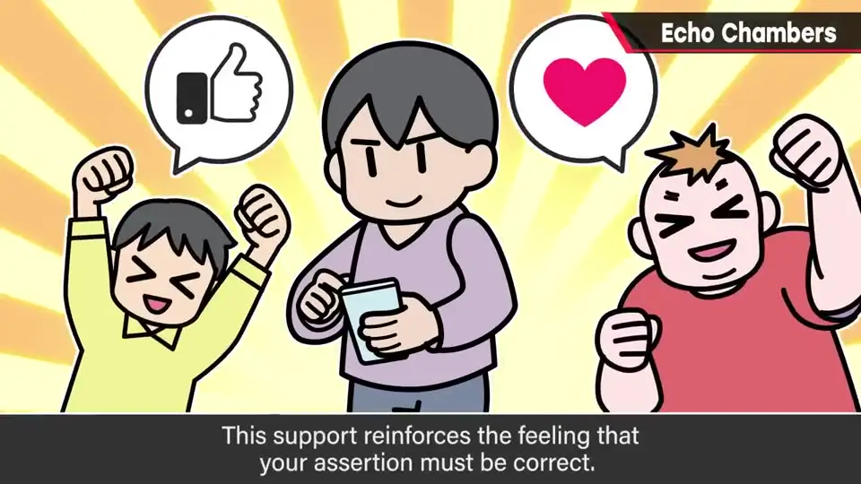
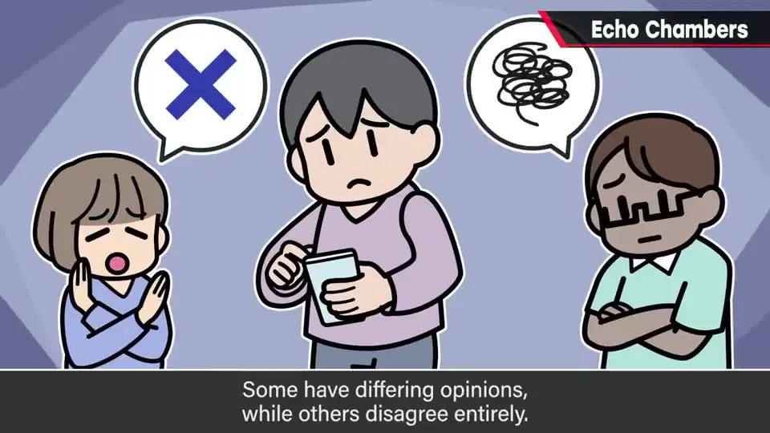
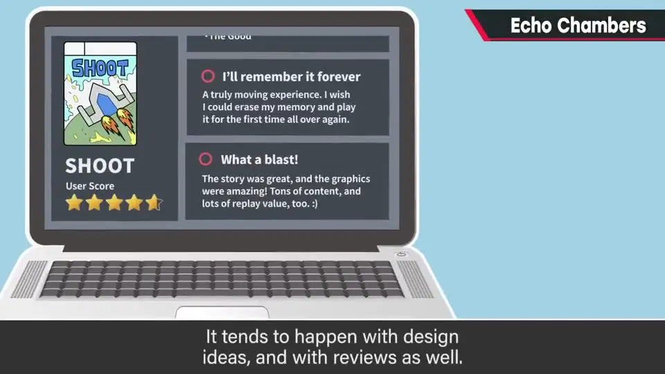
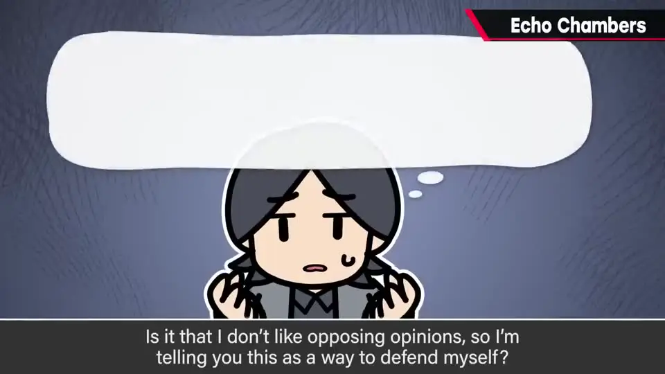
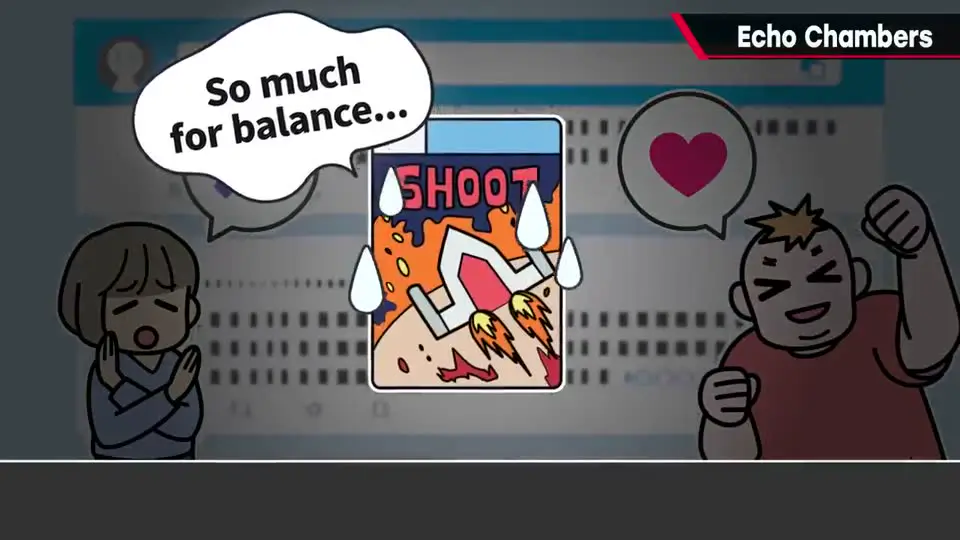

速览
回声室（echo chamber）原指声音会反射回来的残响室，在 SNS 上则指一种自我强化的现象：发表意见后，赞同的人纷纷出现，于是觉得「我是对的」；实际上不同意、持别的意见、反对的人也很多，但自己看到的世界一片赞同。SNS 只吸收感兴趣社群的文化让这种情况很常见，发展下去会看不清该解决的问题，甚至给别人添麻烦；在游戏企划和评价中也是家常便饭。樱井还让观众反思：你如何理解他这番话，本身就可能落入回声室。他说自己只是陈述事实。回声室会影响作品，无法客观看待就一定会失衡；不过游戏制作中大胆偏向某个方向也许很有意思，比随波逐流好——鲜明的个性有不可替代的力量，但最终要取得平衡。
1. 什么是「回声室」 0:03
Echo chamber 本义是残响室：发出的声音会反射、像回声和混响一样传回来。在 SNS 上，它被用来称呼一种自我强化现象。


- 在 SNS 发表意见 → 赞同的人大量出现 → 自我强化「我写的是对的」。
- 但自己看到的世界只有赞同，于是被肯定为「我是对的」。可以说是物以类聚，实际上却是封闭的世界，无法再接受其他意见和见解。
2. 为什么值得警惕 0:57
- SNS 是只吸收自己感兴趣社群的文化，所以很容易这样。
- 发展下去，该解决的问题会变得难以看见，也可能给别人添麻烦。
- 在游戏的企划和评价中也很常见，可以说是家常便饭。
- 不论好坏，现代人生活的世界就是这样构成的。

3. 那么，你觉得我想说什么？ 1:23

樱井反问：听到这里，你觉得我的主张是什么？
- 是想呼吁大家用更公平的眼光看待自己做的游戏？
- 还是不喜欢被反对，为了自我辩护才说这些？
无论你怎么想，只要找到了能认同的意见就会产生共鸣；如果只吸收那种意见，就会形成回声室。樱井说他这次只是平淡地陈述事实，两者都不是。
4. 对作品的影响：客观、个性与平衡 2:04
- 回声室可能影响作品：会变得圆滑还是尖锐不确定，但至少无法客观看待，就一定会做出失衡的东西。
- 不过樱井也说，游戏制作中大胆朝偏向的方向掌舵，也许很有意思——比被人牵着走好得多。
- 当然，听取员工指出的问题、灵活适应情况很重要；但朝特定方向打出的个性，也可能拥有不可替代的力量。
- 无论如何，最终取得平衡很重要。要小心回声室。

flowchart LR
A["发表意见"] --> B["赞同者聚集"]
B --> C["「我是对的」
自我强化"] C --> D["只吸收认同的意见"] D --> A D --> E["看不见问题 · 作品失衡"] F["对策：客观看待 + 听取团队问题
保留个性，最终取得平衡"] -.-> D
自我强化"] C --> D["只吸收认同的意见"] D --> A D --> E["看不见问题 · 作品失衡"] F["对策：客观看待 + 听取团队问题
保留个性，最终取得平衡"] -.-> D
自测题
1. 在 SNS 语境中，「回声室」指什么现象？
发表意见后，赞同的人纷纷出现，于是自我强化「我是对的」；其实也有很多不同意或反对的人，但自己看到的世界一片赞同，变成封闭的世界，无法接受其他意见。 0:21
2. 樱井问观众「你觉得我想说什么」，用意是什么？
无论观众怎么理解，都会去找能认同的意见并产生共鸣；如果只吸收那种意见，就会形成回声室。他说自己这次只是平淡地陈述事实，并无其他意图。 1:23
3. 回声室会如何影响作品？樱井对「偏向」持什么态度？
无法客观看待，作品一定会失衡（变圆滑还是变尖锐不确定）。但游戏制作中大胆偏向某个方向也可能很有意思，比被人牵着走好；鲜明的个性有不可替代的力量。同时要听取员工指出的问题、灵活应对，最终取得平衡。 2:04